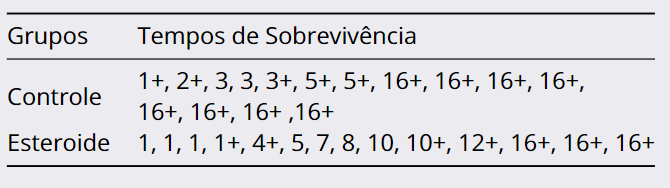
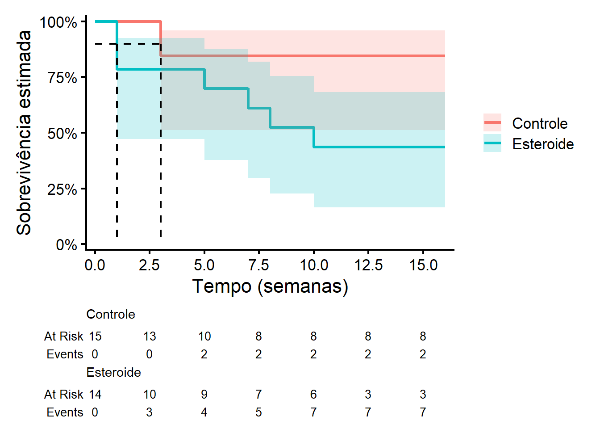
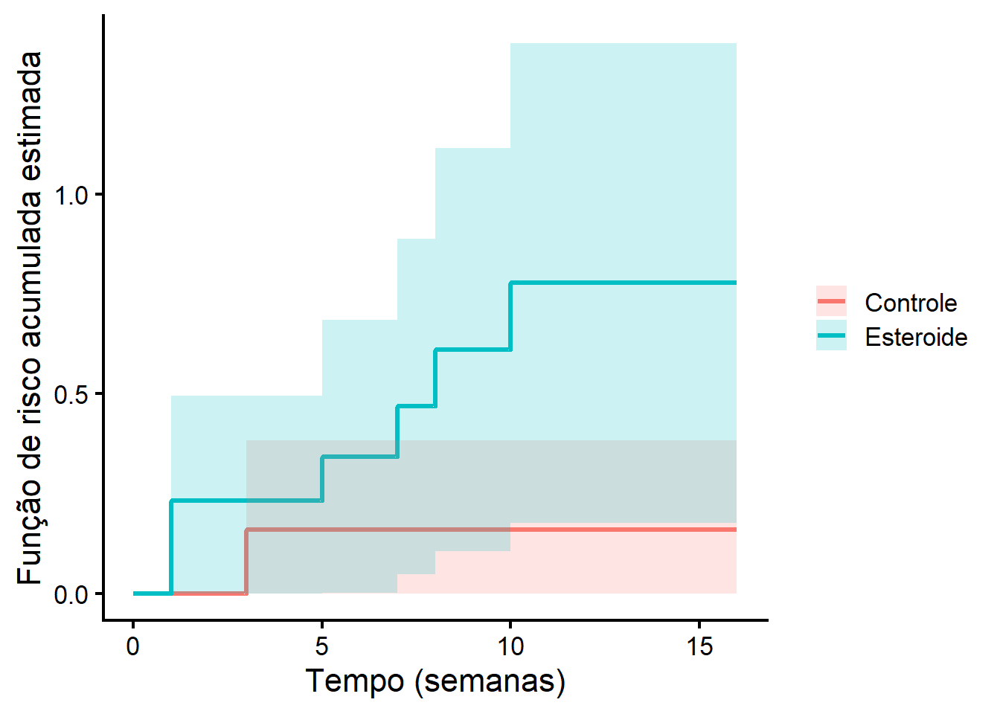

Código
require(dplyr)
require(ggplot2)
require(survival)
require(ggsurvfit)
require(survRM2)Para esta primeira aula prática de Análise de Sobrevivência e Confiabilidade, precisaremos dos seguintes pacotes:
require(dplyr)
require(ggplot2)
require(survival)
require(ggsurvfit)
require(survRM2)Pacote dplyr: Pacote fundamental para a manipulação de dados no R
Pacote ggplot2: Pacote fundamental para construção de gráficos no R
Pacote survival: É o pacote básico para o estudo de Análise de Sobrevivência e Confiabilidade. Contém as principais rotinas, incluindo definição de objetos Surv, curvas Kaplan-Meier, modelos Cox e modelos paramétricos.
Pacote ggsurvfit: O pacote survivaldo R ajusta e traça curvas de sobrevivência (confiabilidade) usando gráficos básicos do R. Os gráficos do pacote ggsurvfit são baseados na estrutura gráfica do pacote ggplot2.
Pacote survRM2: Permite o cálculo do tempo médio restrito de ocorrência do evento de interesse.
Esta seção é dedicada à descrição das bases de dados utilizadas nesta aula.
Um estudo clínico aleatorizado com o objetivo de investigar o efeito da terapia com esteroide no tratamento de hepatite viral aguda. Vinte e nove pacientes com esta doença foram aleatorizados para receber um placebo ou o tratamento com esteroide. Cada paciente foi acompanhado por 16 semanas ou até a morte (evento de interesse) ou até a perda de acompanhamento. Os dados são retratados a seguir:

Os dados mostrados a seguir representam o tempo até a ruptura de um tipo de isolante elétrico sujeito a uma tensão de estresse de 35 Kvolts. O teste consistiu em deixar 25 destes isolantes funcionando até que 15 deles falhassem (censura do tipo II), obtendo-se os seguintes resultados (em minutos):
0,19 0,78 0,96 1,31 2,78 3,16 4,67 4,85 6,50 7,35 8,27 12,07 32,52 33,91 36,71
O estudo é constituído de pacientes portadores de HIV atendidos entre 1986 e 2000 no Instituto de Pesquisa Clínica Evandro Chagas (Ipec/Fiocruz). Dessa coorte, obteve-se uma amostra de 193 indivíduos que foram diagnosticados como portadores de AIDS (critério CDC 1993) durante o período de acompanhamento. O objetivo é mensurar o tempo, em dias, do diagnóstico até a morte dos pacientes. Para comparação da sobrevivência, vamos ver como o sexo impacta a sobrevivência do paciente. Essa base de dados está armazenada no objeto DadosAIDS.csv
Na aula teórica, vimos os seguintes:
A estimação não paramétrica da função \(S(t)\) a partir do estimador de Kaplan-Meier: \(\hat{S}(t)=\prod_{j:t_j\leq t}\left(1-\frac{d_j}{n_j}\right).\)
A variância do estimador Kaplan-Meier obtida pela fórmula de Greenwood: \(\text{Var}\left(\hat{S}(t)\right) = \left[\hat{S}(t)\right]^2 \sum_{j:t_j \le t} \frac{d_j}{n_j (n_j - d_j)}\)
três abordagens para construir os intervalos de confiança para \(S(t)\):
Para exemplificar a aplicação destes conteúdos, vamos utilizar os dados de Hepatite. Lembre-se que sempre observamos uma amostra de \(n\) elementos. Os dados observados de sobrevivência (confiabilidade) para o elemento \(i\), com \(i = 1, 2, 3, ..., n\), são representados, em geral, pelo par
\[(t_i , \delta_i ),\]
em que:
\(\delta_i=\begin{cases} 1, \quad \textrm{se } t_i \textrm{ é um tempo de ocorrência do evento de interesse}\\ 0, \quad \textrm{se } t_i \textrm{ é um tempo censurado} \end{cases}\)
Como a base é pequena, vamos criar os dados manualmente:
tempos <- c(1,2,3,3,3,5,5,16,16,16,16,16,16,16,16,1,1,1,1,4,5,7,8,10,10,12,16,16,16)
cens <- c(0,0,1,1,0,0,0,0,0,0,0,0,0,0,0,1,1,1,0,0,1,1,1,1,0,0,0,0,0)
grupos <- c(rep("Controle",15),rep("Esteroide",14))
Dados1 <- data.frame(tempos,cens,grupos)tempos guarda os valores dos tempos \(t_i\), para \(i=1,2,...,29\)cens guarda a indicadora \(\delta_i\), para \(i=1,2,...,29\)grupos indica o grupo o qual os pacientes estão submetidos: Controle ou EsteroideAs estimativas de Kaplan-Meier para os grupos Controle e Esteroide, associados aos dados de Hepatite, podem ser obtidas a partir da função survfit2() do pacote ggsurvfit. Essa função é uma ligeira adaptação da função survfit do pacote survival, para melhor preservar os elementos para a representação gráfica. Essa função possui os seguintes argumentos básicos:
data: A base de dados.
formula: Essa fórmula quase sempre tem essa estrutura: Surv(tempos,cens)~grupos.
Surv(tempos,cens)~1.conf.int: Nível de confiança do intervalo.
conf.type: Para o intervalo de confiança básico, utilize conf.type = "plain". Para o intervalo de confiança com a transformação log use conf.type = "log" (default do R). Para o intervalo de confiança com a transformação log-log, utilize conf.type = "log-log".
Assim, vamos estimar a função de sobrevivência pelo estimador de Kaplan-Meier a partir dos dados de Hepatite utilizando um intervalo com 95% de confiança sem transformação:
ekm<- survfit2(data=Dados1,
formula = Surv(tempos,cens)~grupos,
conf.type = "plain",
conf.int=0.95)
summary(ekm)Call: survfit(formula = Surv(tempos, cens) ~ grupos, data = Dados1,
conf.type = "plain", conf.int = 0.95)
grupos=Controle
time n.risk n.event survival std.err lower 95% CI
3.000 13.000 2.000 0.846 0.100 0.650
upper 95% CI
1.000
grupos=Esteroide
time n.risk n.event survival std.err lower 95% CI upper 95% CI
1 14 3 0.786 0.110 0.571 1.000
5 9 1 0.698 0.128 0.448 0.948
7 8 1 0.611 0.138 0.340 0.882
8 7 1 0.524 0.143 0.243 0.805
10 6 1 0.437 0.144 0.155 0.718Agora vamos estimar a função de sobrevivência pelo estimador de Kaplan-Meier a partir dos dados de Hepatite utilizando um intervalo com 95% de confiança com a transformação log:
ekm2<- survfit2(data=Dados1,
formula = Surv(tempos,cens)~grupos,
conf.type = "log",
conf.int=0.95)
summary(ekm2)Call: survfit(formula = Surv(tempos, cens) ~ grupos, data = Dados1,
conf.type = "log", conf.int = 0.95)
grupos=Controle
time n.risk n.event survival std.err lower 95% CI
3.000 13.000 2.000 0.846 0.100 0.671
upper 95% CI
1.000
grupos=Esteroide
time n.risk n.event survival std.err lower 95% CI upper 95% CI
1 14 3 0.786 0.110 0.598 1.000
5 9 1 0.698 0.128 0.488 0.999
7 8 1 0.611 0.138 0.392 0.952
8 7 1 0.524 0.143 0.306 0.896
10 6 1 0.437 0.144 0.229 0.832Agora vamos estimar a função de sobrevivência pelo estimador de Kaplan-Meier a partir dos dados de Hepatite utilizando um intervalo com 95% de confiança com a transformação log-log:
ekm3<- survfit2(data=Dados1,
formula = Surv(tempos,cens)~grupos,
conf.type = "log-log",
conf.int=0.95)
summary(ekm3)Call: survfit(formula = Surv(tempos, cens) ~ grupos, data = Dados1,
conf.type = "log-log", conf.int = 0.95)
grupos=Controle
time n.risk n.event survival std.err lower 95% CI
3.000 13.000 2.000 0.846 0.100 0.512
upper 95% CI
0.959
grupos=Esteroide
time n.risk n.event survival std.err lower 95% CI upper 95% CI
1 14 3 0.786 0.110 0.472 0.925
5 9 1 0.698 0.128 0.378 0.876
7 8 1 0.611 0.138 0.298 0.819
8 7 1 0.524 0.143 0.227 0.754
10 6 1 0.437 0.144 0.164 0.683Para todas as saídas, observe que:
time: Os tempos distintos de ocorrência do evento (\(t_j\))n.risk: \(n_j\)n.event: \(d_j\)survival: Estimativa de Kaplan-Meier para \(S(t_j)\)std.error: Desvio padrão associado à estimativa de Kaplan-Meier (raiz quadrada da variância de Greenwood)lower CI e upper CI: limites do intervalo de confiança solicitado e com a confiança especificada.Nas próximas análises considere a utilização do objeto ekm3 (transformação log-log). Por exemplo, para obter a estimativa da função de sobrevivência em qualquer valor de interesse, você pode usar o seguinte comando:
summary(modelo, times = c(tempos de interesse))Por exemplo, suponha que seja de interesse estimar a função de sobrevivência para os tempos de 3, 8 e 17 semanas. Tem-se, portanto, o seguinte comando:
summary(ekm3,times = c(3,8,17))Call: survfit(formula = Surv(tempos, cens) ~ grupos, data = Dados1,
conf.type = "log-log", conf.int = 0.95)
grupos=Controle
time n.risk n.event survival std.err lower 95% CI upper 95% CI
3 13 2 0.846 0.1 0.512 0.959
8 8 0 0.846 0.1 0.512 0.959
grupos=Esteroide
time n.risk n.event survival std.err lower 95% CI upper 95% CI
3 10 3 0.786 0.110 0.472 0.925
8 7 3 0.524 0.143 0.227 0.754Note que a estimativa para 17 semanas não foi computada pois não há dados em nenhum dos dois grupos que forneça esse valor.
Para visualizar o gráfico com a função de sobrevivência estimada, vamos usar a função ggsurvfit() do pacote ggsurvfit com os comandos:
ggsurvfit(ekm3, linewidth = 1.2) +
add_risktable() +
add_censor_mark(size = 2, alpha = 1)+
scale_ggsurvfit() +
labs(
x = "Tempo (semanas)",
y = "Sobrevivência estimada"
) +
theme_classic(base_size = 16) 
Para incluir o intervalo de confiança, basta acrescentar o comando add_confidence_interval()
ggsurvfit(ekm3, linewidth = 1.2) +
add_confidence_interval() +
add_risktable() +
scale_ggsurvfit() +
labs(
x = "Tempo (semanas)",
y = "Sobrevivência estimada"
) +
theme_classic(base_size = 16)
Os comandos para realizar estes gráficos são descritos a seguir
ggsurvfit(ekm3, linewidth = 1.2)
→ gera a curva de sobrevivência (Kaplan–Meier)
→ linewidth: espessura da linha
add_risktable()
→ adiciona a tabela de indivíduos sob risco ao longo do tempo
add_censor_mark(size = 2, alpha = 1)
→ adiciona marcas de censura na curva
→ size: tamanho
→ alpha: transparência
add_confidence_interval()
→ adiciona o intervalo de confiança da curva (faixa sombreada)
scale_ggsurvfit()
→ coloca o eixo y em porcentagem.
labs(x = ..., y = ...)
→ define os rótulos dos eixos
theme_classic(base_size = 16)
→ aplica um tema limpo
→ base_size: tamanho da fonte
Para alterar as quebras do eixo do tempo utilize o comando
scale_x_continuous(breaks = c(quebras))doggplot2, como em qualquer outro gráfico desse pacote.
Para mais detalhes sobre o a função ggsurvfitt, basta consultar o site ggsurvfit
Na aula teórica, vimos os seguintes:
A estimativa não paramétrica do percentil \(t_p\) é \[ \hat{t_p} = \min \{ t_j \mid \hat{S}(t_j) \leq 1-\frac{p}{100} \} \]
Os intervalos de confiança para o percentil \(t_p\) são obtidos de maneira gráfica traçando uma linha horizontal no eixo da probabilidade de sobrevivência no valor correspondente ao quantil desejado.
Encontre a interseção dessa linha horizontal com as três curvas: a curva de sobrevivência estimada, o limite inferior do IC e o limite superior do IC.
A partir da função quantile do R, é possível estimar qualquer percentil dos tempos de ocorrência do evento de interesse. Essa função também apresenta o intervalo de confiança de 95% atrelado a essa estimativa. Utilize o seguinte esquema:
quantile("Objeto_surv","percentil")Por exemplo, para os dados de pacientes com hepatite, tem-se as seguintes estimativas e intervalos de confiança para o \(t_{10}\), avaliado em cada grupo:
quantile(ekm3,0.1)$quantile
10
grupos=Controle 3
grupos=Esteroide 1
$lower
10
grupos=Controle 3
grupos=Esteroide 1
$upper
10
grupos=Controle NA
grupos=Esteroide 5Note que algumas estimativas no
Rnão podem ser obtidas. Isso se deve, no nosso caso, ao pequeno tamanho de amostra e excesso de censuras.
Note que como o intervalo calculado herda as especificações da função
survfit2.
Graficamente, podemos acrescentar esse percentil no gráfico adicionando o comando add_quantile("1-probabilidade(s)")
p=0.1
ggsurvfit(ekm3, linewidth = 1.2) +
add_confidence_interval() +
add_quantile(1-p)+
add_risktable() +
scale_ggsurvfit() +
labs(
x = "Tempo (semanas)",
y = "Sobrevivência estimada"
) +
theme_classic(base_size = 16)
Agora considere as seguintes estimativas e intervalos de confiança para o \(t_{50}\), avaliado em cada grupo:
quantile(ekm3,0.5)$quantile
50
grupos=Controle NA
grupos=Esteroide 10
$lower
50
grupos=Controle NA
grupos=Esteroide 1
$upper
50
grupos=Controle NA
grupos=Esteroide NAGraficamente:
p=0.5
ggsurvfit(ekm3, linewidth = 1.2) +
add_confidence_interval() +
add_quantile(1-p)+
add_risktable() +
scale_ggsurvfit() +
labs(
x = "Tempo (semanas)",
y = "Sobrevivência estimada"
) +
theme_classic(base_size = 16)
Na aula teórica, vimos os seguintes:
\[ \hat{\Lambda}(t)=\sum_{j:t_j\leq t}\left(\frac{d_j}{n_j}\right) \]
\[ \hat{Var}[\hat{\Lambda}(t)] = \sum_{t_i \leq t} \frac{d_i}{n_i^2} \]
\[ IC_{100(1-\alpha)\%}^{\log}(\Lambda(t)) = \hat{\Lambda}(t) \times \exp\left( \pm z_{1-\alpha/2} \times \frac{\sqrt{\hat{Var}[\hat{\Lambda}(t)]}}{\hat{\Lambda}(t)} \right) \]
Para exemplificar a aplicação destes conteúdos, vamos utilizar os dados de Hepatite novamente.
A extração das estimativas de Nelson-Aalen para a função de risco acumulada não é direta como no caso das estimativas de Kaplan-Meier para a função de sobrevivência. Para começar o processo, voltemos à utilização da função survfit2. Entretanto, agora, precisamos colocar o argumento type = "fh" para especificar o método de Nelson-Aalen:
fit_na <- survfit2(
Surv(tempos, cens) ~ grupos,
data = Dados1,
conf.type = "log",
type = "fh"
)Entretanto, note que ao rodar o comando summary(fit_na) o R transforma as estimativas de Nelson Aalen para a função de sobrevivência.
Para extrair as estimativas do risco acumulado, veja as saídas do objeto fit_na:
str(fit_na)List of 19
$ n : int [1:2] 15 14
$ time : num [1:13] 1 2 3 5 16 1 4 5 7 8 ...
$ n.risk : num [1:13] 15 14 13 10 8 14 10 9 8 7 ...
$ n.event : num [1:13] 0 0 2 0 0 3 0 1 1 1 ...
$ n.censor : num [1:13] 1 1 1 2 8 1 1 0 0 0 ...
$ surv : num [1:13] 1 1 0.852 0.852 0.852 ...
$ std.err : num [1:13] 0 0 0.113 0.113 0.113 ...
$ cumhaz : num [1:13] 0 0 0.16 0.16 0.16 ...
$ std.chaz : num [1:13] 0 0 0.113 0.113 0.113 ...
$ strata : Named int [1:2] 5 8
..- attr(*, "names")= chr [1:2] "grupos=Controle" "grupos=Esteroide"
$ type : chr "right"
$ logse : logi TRUE
$ conf.int : num 0.95
$ conf.type : chr "log"
$ lower : num [1:13] 1 1 0.682 0.682 0.682 ...
$ upper : num [1:13] 1 1 1 1 1 ...
$ t0 : num 0
$ call : language survfit(formula = Surv(tempos, cens) ~ grupos, data = Dados1, conf.type = "log", type = "fh")
$ .Environment:<environment: R_GlobalEnv>
- attr(*, "class")= chr [1:2] "survfit2" "survfit"A partir dos valores cumhaz e std.chaz poderemos extrair as estimativas pontuais e o erro padrão associado para cada grupo:
tabela_nelson_aalen <- function(fit, conf_level = 0.95) {
library(dplyr)
z <- qnorm(1 - (1 - conf_level)/2) # valor crítico da normal
resultados <- list()
grupos_nomes <- names(fit$strata)
for(i in seq_along(grupos_nomes)) {
if(i == 1) {
idx <- 1:fit$strata[i]
} else {
idx <- (sum(fit$strata[1:(i-1)]) + 1):sum(fit$strata[1:i])
}
tabela_grupo <- data.frame(
tj = fit$time[idx],
dj = fit$n.event[idx],
nj = fit$n.risk[idx],
Lambda = fit$cumhaz[idx],
Std.err = fit$std.chaz[idx]
) %>%
dplyr::filter(dj > 0) %>%
dplyr::mutate(
IC_lower = Lambda / exp(z * Std.err / Lambda),
IC_upper = Lambda * exp(z * Std.err / Lambda)
) %>%
dplyr::select(tj, dj, nj, Lambda, Std.err, IC_lower, IC_upper) %>%
dplyr::mutate(
dplyr::across(where(is.numeric), ~ round(., 6))
)
resultados[[grupos_nomes[i]]] <- tabela_grupo
}
return(resultados)
}
tabelas_por_grupo <- tabela_nelson_aalen(fit_na, conf_level = 0.95)
for(grupo in names(tabelas_por_grupo)) {
cat("\n", paste(rep("=", 70), collapse = ""), "\n")
cat("GRUPO:", grupo, "\n")
cat(paste(rep("=", 70), collapse = ""), "\n")
print(tabelas_por_grupo[[grupo]])
}
======================================================================
GRUPO: grupos=Controle
======================================================================
tj dj nj Lambda Std.err IC_lower IC_upper
1 3 2 13 0.160256 0.113409 0.040035 0.641486
======================================================================
GRUPO: grupos=Esteroide
======================================================================
tj dj nj Lambda Std.err IC_lower IC_upper
1 1 3 14 0.231685 0.134029 0.074556 0.719968
2 5 1 9 0.342796 0.174096 0.126688 0.927546
3 7 1 8 0.467796 0.214323 0.190579 1.148255
4 8 1 7 0.610653 0.257570 0.267154 1.395812
5 10 1 6 0.777320 0.306790 0.358633 1.684804survfit(type="fh"):\[ \underbrace{\frac{1}{n_j} + \frac{1}{n_j} + \dots + \frac{1}{n_j}}_{d_j \text{ vezes}} = \frac{d_j}{n_j} \]
Por fim, tem-se o gráfico com a função de risco acumulada estimada e os respecttivos intervalos de confiança:
ggsurvfit(fit_na,
linewidth = 1.2,
type = "cumhaz") +
add_confidence_interval() +
labs(
x = "Tempo (semanas)",
y = "Função de risco acumulada estimada"
) +
theme_classic(base_size = 16)
Na aula teórica, vimos os seguintes:
Por indefinição na estimativa do tempo médio de ocorrência do evento \(t_m = \int_0^\infty S(t)\,dt\), nos concentraremos em estimar o tempo médio restrito de ocorrência do evento de interesse \(t_m(\tau) = \int_0^\tau S(t)\,dt\), considerando o tempo \(\tau\).
Assim, a partir do estimador de Kaplan-Meier, tem-se o seguinte estimador para o tempo médio restrito de ocorrência do evento de interesse:
\[ \widehat{t}_m(\tau) = \int_0^\tau \widehat{S}(t)\,dt \]
No R as estimativas de \(t_m(\tau)\) considerando o tempo \(\tau\) podem ser obtidas a partir do pacote survRM2 com a função rmst2. Veja o código abaixo:
Tempo = Dados1$tempos
Cens = Dados1$cens
Grupo <- as.numeric(as.factor(Dados1$grupos)) - 1
# Calcular a RMST com um tau de 10 anos
resultado = rmst2(Tempo, Cens, Grupo,tau=16)
resultado
The truncation time: tau = 16 was specified.
Restricted Mean Survival Time (RMST) by arm
Est. se lower .95 upper .95
RMST (arm=1) 9.817 1.684 6.516 13.119
RMST (arm=0) 14.000 1.301 11.450 16.550
Restricted Mean Time Lost (RMTL) by arm
Est. se lower .95 upper .95
RMTL (arm=1) 6.183 1.684 2.881 9.484
RMTL (arm=0) 2.000 1.301 -0.550 4.550
Between-group contrast
Est. lower .95 upper .95 p
RMST (arm=1)-(arm=0) -4.183 -8.354 -0.011 0.049
RMST (arm=1)/(arm=0) 0.701 0.478 1.028 0.069
RMTL (arm=1)/(arm=0) 3.091 0.776 12.314 0.110Note que a função rmst2 trabalha somente par a par. É fundamental transformar os grupos para o suporte 0 e 1. Considere tau como sendo o maior tempo comum aos grupos em comparação. A saída que nos interessa é somente a primeira.
Assim, para o grupo controle, considerando um tempo de 16 semanas, o tempo médio de vida restrito é 14 semanas e para o grupo esteroide é 9.817 semanas.
Utilize a transformação log-log, quando necessário
1- Base de dados Isolantes Elétricos.
A partir da descrição dos dados, construa a base de dados e guarde em um objeto chamado Dados2.
Obtenha as estimativas para as funções de sobrevivência a partir do estimador de Kaplan-Meier. Faça um gráfico com o intervalo construído.
2- Base de dados AIDS.
Leia a base de dados e guarde em um objeto Dados3.
Considerando os dados completos (sem estratificar por sexo), obtenha as estimativas para a função de sobrevivência a partir do estimador de Kaplan-Meier e faça um gráfico com o intervalo construído.
Você acha que as funções de sobrevivência de homens e mulheres são diferentes?
Encontre uma estimativa pontual e intervalar para os tempos em dias tal que 20% dos pacientes do sexo masculino e do sexo feminino já morreram.
Encontre as estimativas pontuais da função de risco acumulado para ambos os sexos no tempo 1500 dias. Quantas vezes o risco acumulado de morte dos homens é maior que o das mulheres?
Faça o gráfico da função de risco acumulada estimada para cada sexo, juntamente com o intervalo de confiança de 95%. Interprete os resultados.
Estime, para os dois sexos, o tempo médio de sobrevivência restrito considerando um acompanhamento de 3000 dias. Compare os resultados.